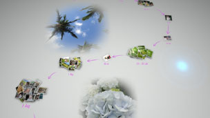

Photo Galleryn toiminnot
Voit nauttia seuraavista Photo Galleryn ominaisuuksista.
Valokuvien katseleminen tapahtumien mukaan
Kun käynnistät Photo Galleryn, kaikki PS3™-järjestelmän tallennustilaan tallennetut valokuvat analysoidaan ja ryhmitellään automaattisesti valokuvien päivämäärän ja kellonajan mukaan määräytyvien "tapahtumien" mukaisesti. Näyttö, jossa valokuvat näkyvät tapahtumina, on nimeltään [Kirjastoalue].

Valokuvien järjestäminen
Voit ryhmitellä valokuvat niiden ottamispäivän ja -kellonajan, kuvissa näkyvien ihmisten määrän, kuvissa näkyvien ihmisten ilmeiden tai muiden seikkojen perusteella. Kun valokuvat on ryhmitelty, voit jaotella kutakin ryhmää edelleen niin, että tietty ryhmä sisältää esimerkiksi vain hymyileviä lapsia esittävät kuvat.
Soittolistan luominen valituista valokuvista
Voit luoda soittolistoja valitsemistasi valokuvista tai valokuvista, jotka on ryhmitelty jollakin  (Ryhmittele) -kohdan vaihtoehdolla. Luomasi soittolistat näkyvät kohdassa [Soittolista-alue].
(Ryhmittele) -kohdan vaihtoehdolla. Luomasi soittolistat näkyvät kohdassa [Soittolista-alue].